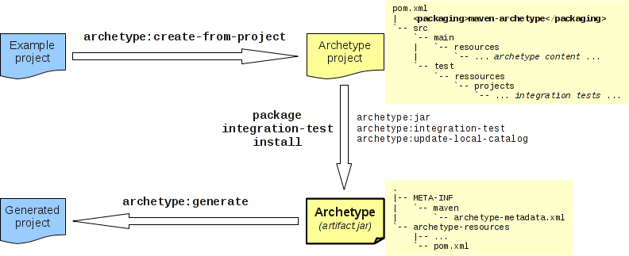

Maven 项目骨架
2023-10-22
1 min read
项目初期如何快速搭建符合规范、便于定制的项目结构, 相信这是大家一直在追求的. 所幸 Maven 提供了 archetypes 插件可满足这一诉求.
principle
通过下图我们可以知道, 要制作一个项目骨架大致需要以下几个步骤
- 创建一个example工程, 此 example 工程 包含了架构师对框架的设计, 如 module 划分、依赖关系、包结构设计等等
- 使用 Archetypes 插件对 example 工程进行配置并打包, 完成后骨架工程的代码被放在 example/target 目录之下
- 在编译完成的骨架工程目录下执行 mvn install/mvn deploy 对骨架工程进行发布
- 在另外一个目录使用 archetype:generate 命令从骨架工程生成项目

create from project
对 example 工程的创建. 需要注意的是 maven 各模块内的包名需要定义一个通用的开头, 例如 com.pkg.
在最外层 pom 目录下增加 archetype 的配置文件 archetype.properties. excludePatterns 表示打包至 target 目录下的文件.
1 excludePatterns=.idea/,.settings/,.classpath,.project
2 gitignore=.gitignore
使用 archetype:create-from-project 创建 archetype 项目, 并指定配置文件及通用包名
然后使用 mvn clean deploy 对 target 目录下的 archetype 项目进行发布
1 #!/bin/bash
2 set -e
3 echo "====longda-archetype build successfully"
4 mvn clean archetype:create-from-project -Darchetype.properties=archetype.properties \
5 -Darchetype.filteredExtentions=* -DpackageName=com.pkg
6 echo "====longda.archetype build successfully"
7 mvn clean deploy javadoc:jar source:jar -f target/generated-sources/archetype/pom.xml
8 echo "====longda.archetype install successfully"
generate project
运行下面的命令来生成项目骨架
1 mvn archetype:generate \
2 -DarchetypeGroupId=com.archetype \
3 -DarchetypeArtifactId=archetype-archetype \
4 -DarchetypeVersion=0.1.0-SNAPSHOT \
5 -DinteractiveMode=false \
6 -DgroupId=com.center.crm \
7 -DartifactId=center-crm \
8 -Dversion=3.10.0-CD-LD-SNAPSHOT \
9 -Dpackage=com.center.crm
这个命令所构建的项目是 parent 的一个子模块。
artifactId这也是目标项目的文件夹名称
| 参数名 | 含义说明 | 值说明 |
| archetypeGroupId | 骨架项目的GroupId | 固定值 com.archetype |
| archetypeArtifactId | 骨架项目的ArtifactId | 固定值 archetype-archetype |
| archetypeVersion | 骨架项目的Version | 最新版本参考 Update |
| interactiveMode | 命令行交互模式 | 固定值 false |
| groupId | 目标项目的 GroupId | 格式 com.center.%appName% |
| artifactId | 目标项目的 ArtifactId | 格式 center-%appName% |
| version | 目标项目的 Version | 固定值 3.10.0-CD-LD-SNAPSHOT |
| package | 目标项目的包路径 | 格式 com.center.%appName% |
项目创建好，并且成功上传至 gitlab 代码仓库以后
需要将项目作为一个 submodule 添加至 parent 的根目录下
并且需要在 parent/pom.xml 的 modules 节点处增加此项目，以做归档